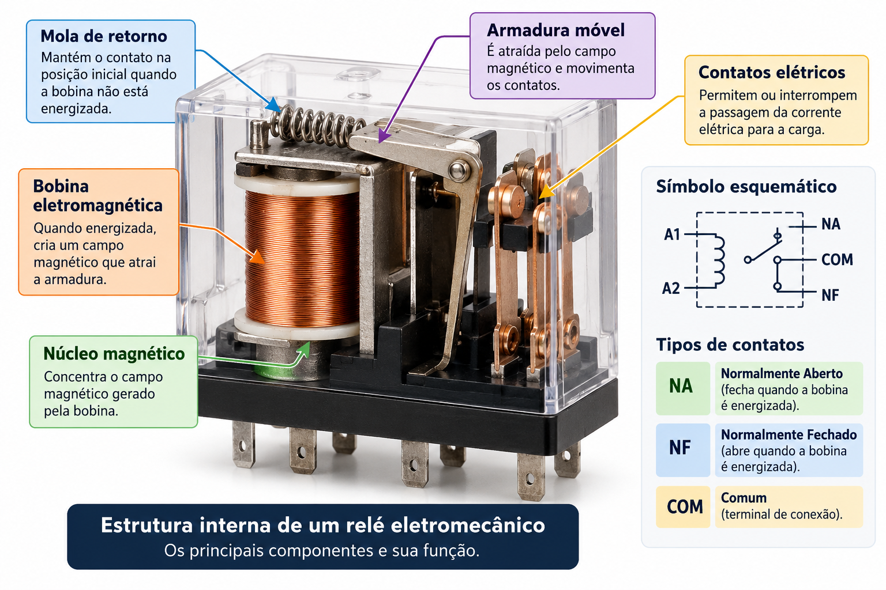

Relés e Chaves Eletromecânicas
Conheça os dispositivos que permitem controlar circuitos elétricos por meio de contatos mecânicos.
1. Introdução
Imagine que você precise acionar uma lâmpada ou um motor utilizando um circuito de comando separado.
Os relés eletromecânicos permitem realizar esse controle por meio do acionamento de contatos elétricos.
2. Conteúdo técnico
O que é um relé eletromecânico?
É um dispositivo que utiliza uma bobina eletromagnética para movimentar contatos elétricos.
Principais componentes
- Bobina eletromagnética
- Núcleo magnético
- Armadura móvel
- Mola de retorno
- Contatos elétricos
Tipos de contatos
NA: normalmente aberto. Permanece aberto na condição de repouso.
NF: normalmente fechado. Permanece fechado na condição de repouso.
COM: terminal comum utilizado em contatos comutadores.
Chaves eletromecânicas
São dispositivos que estabelecem, interrompem ou alteram conexões elétricas por meio de mecanismos e contatos físicos.
3. Exemplos práticos
Acionamento de uma lâmpada
Um circuito de comando energiza a bobina do relé. O contato NA fecha e permite a alimentação da lâmpada por outro circuito.
Automação industrial
Relés podem participar de circuitos de comando de máquinas, sistemas de sinalização e intertravamentos.
Exemplo: controle de uma lâmpada com relé
Imagine um sistema em que um circuito de comando de 12 V aciona a bobina de um relé adequado. Quando a bobina é energizada, o contato normalmente aberto (NA) se fecha.
Esse contato pode controlar outro circuito que alimenta uma lâmpada, desde que a tensão, a corrente e o tipo de carga estejam dentro das especificações do relé.
4. Recursos visuais

5. Curiosidades e aplicações
Relés são encontrados em automóveis, painéis de comando, sistemas de automação e equipamentos elétricos.
Apesar de sua utilidade, os relés eletromecânicos possuem partes móveis sujeitas a desgaste.
6. Resumo para o caderno
Relés eletromecânicos utilizam o eletromagnetismo para acionar contatos elétricos. Seus principais componentes são bobina, núcleo, armadura, mola e contatos. Os contatos podem ser normalmente abertos ou fechados.
Chaves eletromecânicas realizam operações de conexão e desconexão de circuitos por ação mecânica.
7. Quiz de aprendizagem
Teste seus conhecimentos sobre relés e chaves eletromecânicas.
8. Referências
https://www.mundodaeletrica.com.br/o-que-e-rele-como-funciona-um-rele/